2030년 2월, 프랑스 사부아 라 플라뉴. 마이클 하트의 봅슬레이 결승이 시작됐다.01열네 번째 커브. 썰매가 크게 흔들렸다.02
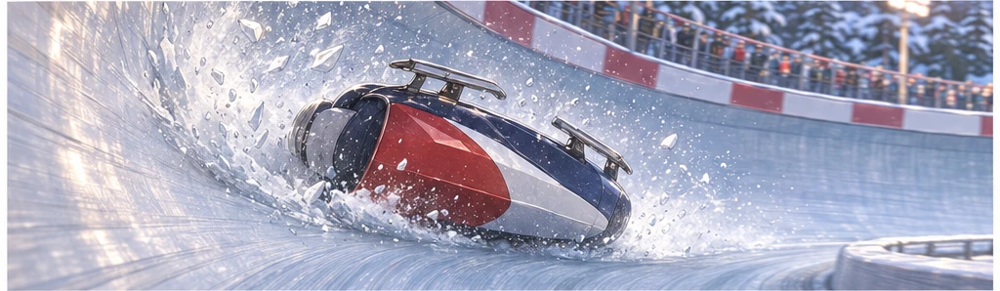
썰매가 전복됐다. 미아에게는 그 순간이 끝없이 길게 느껴졌다.03
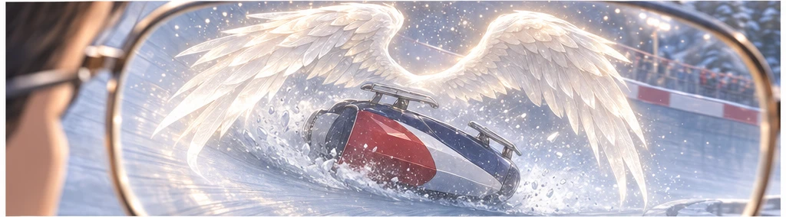
하임의 글래스 너머로 하얀 날개가 썰매를 덮었다. 리웨이가 꿈에서 보았던 모습이었다.04미아: 마이클…!05
그를 살린 손들
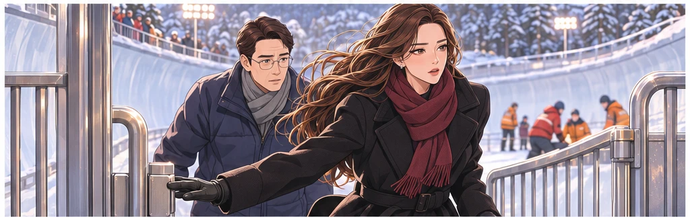
미아는 조성민 박사를 데리고 의료진이 있는 곳으로 달려갔다.06
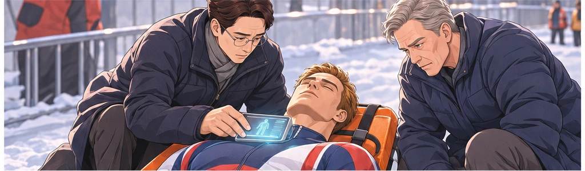
스캐너는 부상을 찾아냈지만 주치의의 손에서는 약물 주입이 시작되지 않았다.07
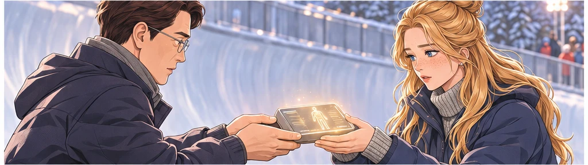
박사가 캐털린에게 건넨 스캐너가 그녀의 손에서 처음으로 환하게 켜졌다.08
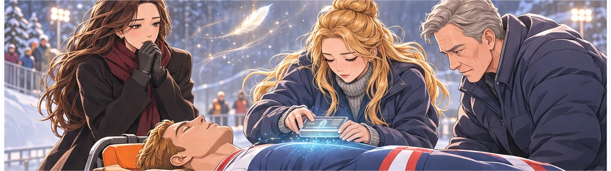
의료진의 손과 펜스 너머의 기도. 미아는 그 순간을 평생 잊지 못했다.09
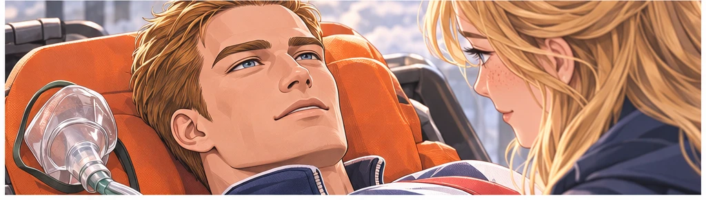
캐털린: 맥박이 돌아와요… 수치가 안정됐어요!10
병실에서 이어진 약속
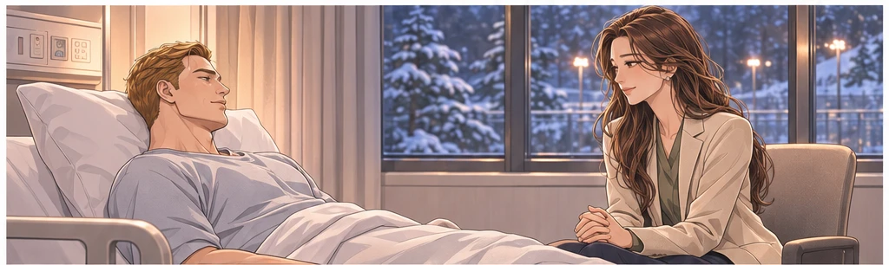
그날 저녁. 병실에서 마이클의 숨소리를 다시 들을 수 있었다.11
마이클: 그때 봤어요. 아름 씨에게… 빛나는 갑옷이 있었어요.12
미아: 당신을 살리려고 모두가 힘을 모았어요. 나도, 그분들도요.13
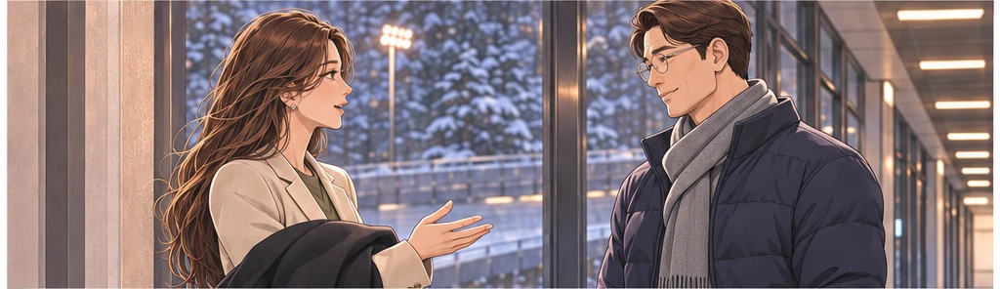
미아: 퓨어데이에 필요한 일이라면, 제가 할 수 있는 것부터 도울게요.14사고는 끝이 아니었다. 미아는 그날의 약속을 일상에서도 이어가기로 했다.15
지금의 자리
회사는 이제 미아 혼자 시작했던 방보다 훨씬 커져 있었다.16질문을 이어받을 사람이 생겼고,17결정을 나눌 팀도 자라고 있었다.18
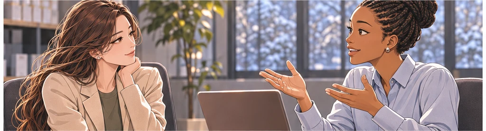
에이미 카터: 이 부분은 저희 팀에서 맡아 진행해도 될까요?19미아: 네. 먼저 여러분 계획을 들려주세요.20
남겨두는 것이 아니라
미아: 새로운 일에 합류하는 것을 고민하고 있어요.21다니엘 모랄레스: 운영을 어떻게 나눌지부터 같이 정하죠.22미아: 여러분에게 갑자기 짐을 넘기고 싶지는 않습니다.23나디아 브룩스: 그래서 지금 함께 준비할 수 있는 거잖아요.24
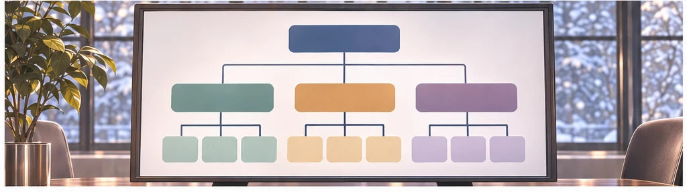
믿고 맡기는 일도 책임을 놓는 일과는 달랐다.25
배워온 방식대로
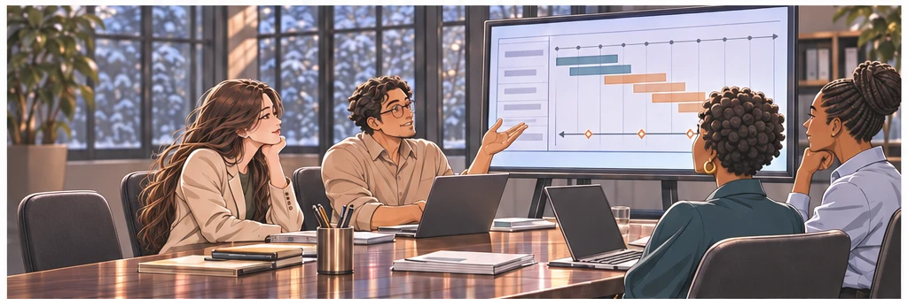
결정할 범위와 보고할 일, 긴급할 때 연락할 방법을 정했다.26미아: 제가 빠지면 가장 먼저 막히는 곳이 어디인가요?27
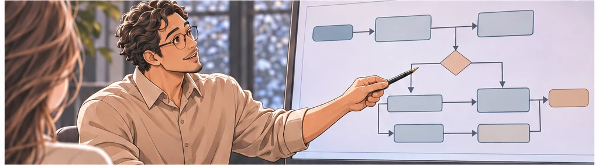
다니엘 모랄레스: 여기부터 나눠보면 됩니다.28성장할 때 배운 질문이 다음 선택을 도왔다.29
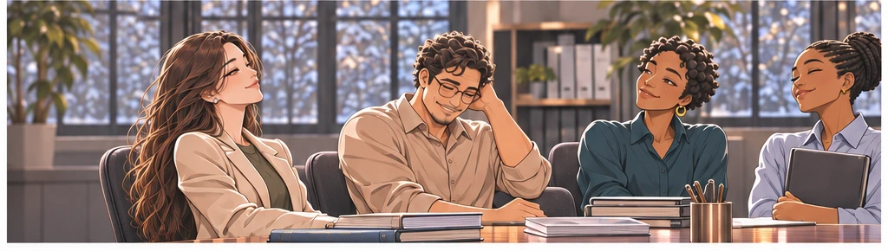
대신해줄 사람이 아니라 함께 책임질 사람들을 믿었다.30
루미엘의 응원
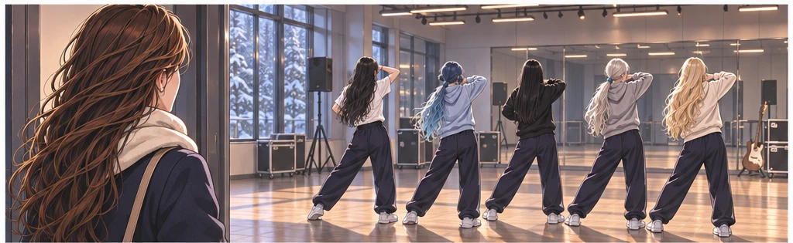
루미엘에게도 앞으로 맡을 일을 직접 이야기했다.31설화: 저희한테 해주셨던 말 기억해요?32미아: 어떤 말이요?33설화: 자기 목소리로 다녀오라고요. 대표님도 그러셨으면 좋겠어요.34
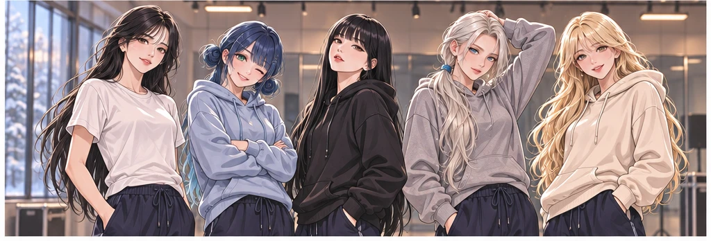
응원하던 사람들에게서 응원을 돌려받았다.35
아버지와 걷다
아빠: 처음 미국에 가던 날 기억하니?36미아: 다 준비되지 않았다고 했었죠.37아빠: 지금도 모르는 게 많을 거야.38미아: 네. 그래도 같이 준비할 사람이 있어요.39떠나는 이유를 말할 수 있다는 점이 그때와 달랐다.40
엄마의 식탁
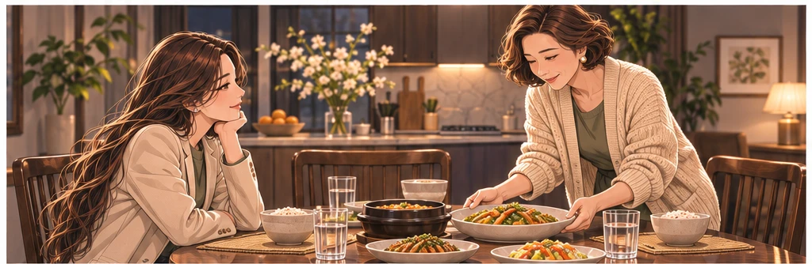
엄마는 늘 하던 것처럼 식탁을 차렸다.41엄마: 무서운 건 뭐니?42미아: 잘못 선택하면 돌아올 수 없을까 봐요.43엄마: 선택을 고쳐야 할 때도 같이 생각하면 되지.44
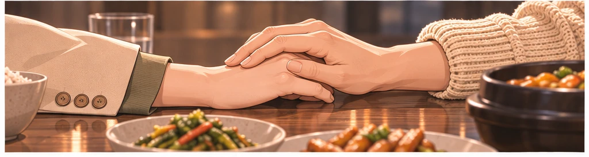
엄마의 긍정은 오늘도 혼자 버티라는 말이 아니었다.45
살아 돌아온 뒤의 대화
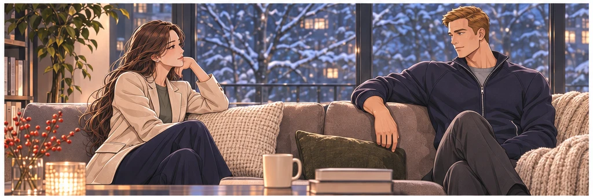
미아: 아직도 그날 커브를 생각하면 겁이 나요.46마이클: 나도 그래요. 아무 일 없었던 것처럼 지낼 수는 없어요.47
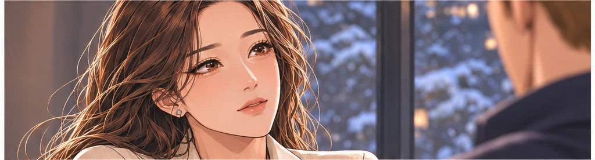
마이클: 그래도 혼자 살아 돌아온 건 아니라는 걸 기억해요.48미아: 나도 그날 받은 도움을, 내가 할 수 있는 일로 이어가고 싶어요.49서로를 지키는 마음은 두려움을 숨기는 대신 함께 말하는 데서 시작됐다.50
다시 펼친 노트
미아는 한국의 친구에게 받았던 공책을 펼쳤다.51
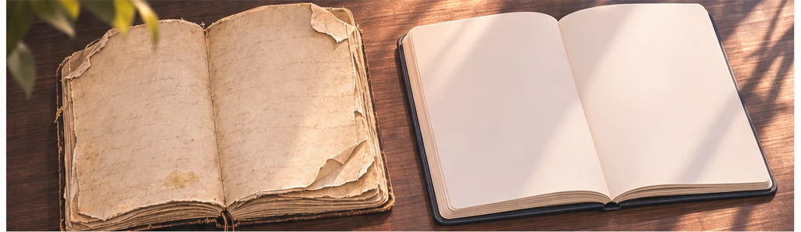
누군가에게 힘이 되는 목소리를 갖고 싶었다.52미아: 생각보다 많은 사람들이 먼저 내 이야기를 들어줬네.53그 이름들을 떠올리자 다음 문장이 조금 선명해졌다.54받은 도움을 다음 사람에게 이어주고 싶었다.55
결정의 아침
미아의 기도: 하나님, 크게 보이는 길보다 제가 가야 할 길을 보게 해주세요.56두려움이 모두 없어진 것은 아니었다.57미아: 도울 수 있는 일부터 맡겠습니다. 회사와도 함께 준비할게요.58
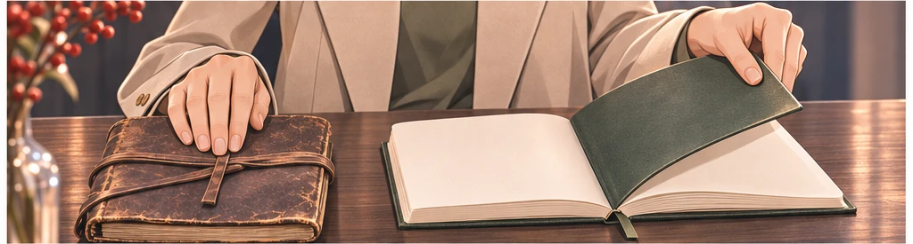
미아는 다음 페이지를 비워두었다.59이미 아는 답만 쓰러 가는 길은 아니었다.60
이어갈 사람들
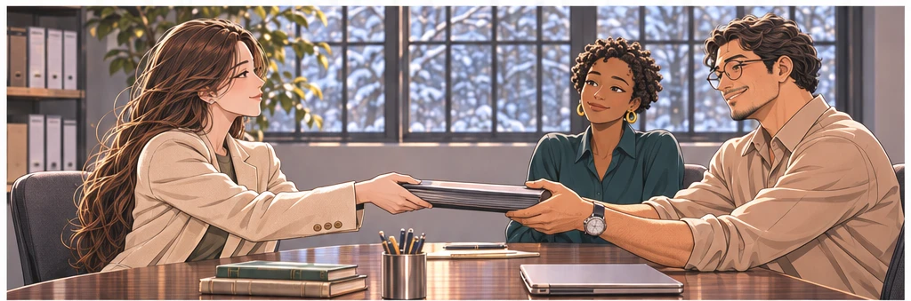
미아: 부탁드립니다. 결정한 내용은 계속 같이 확인해요.61다니엘 모랄레스: 대표님이 돌아와도 보고드릴 이야기가 많을 겁니다.62미아: 그 얘기 들을 시간은 꼭 비워둘게요.63회사는 문을 닫지 않았다. 각자의 자리가 더 분명해졌다.64떠나는 발걸음 뒤에도 함께 만든 시간이 이어졌다.65
다시 만나는 퓨어데이
사고 현장에서 만났던 퓨어데이와 다시 이야기를 나누기로 한 날.66
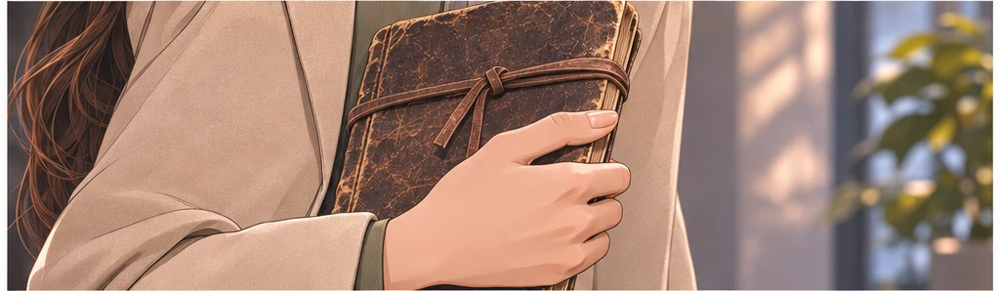
처음 학교 문을 넘던 손에는 시간표가 있었다.67지금은 들어야 할 이야기를 적을 공책이 있었다.68미아: 그날 약속했죠. 제가 할 수 있는 일부터 함께하고 싶어요.69후원과 사람을 잇는 동역자. 미아는 자신이 맡을 자리에서 시작했다.70
아직 다 알지 못하는 부르심
훗날 마이클 하트는 천사장 미가엘의 현현으로 자신의 부르심을 마주한다.71미아 역시 찬양대 천사장 율리아의 현현으로 이어질 길을 걷고 있었다.72미아: 어디서부터 이야기해주실래요?73하지만 지금 두 사람 앞에 있는 일은, 살아 돌아온 오늘을 함께 책임지는 것이었다.74김미아의 이야기는 퓨어데이 2부의 그날과 이어진다. 얼음 위에서 받은 도움을, 다음 사람에게로.75